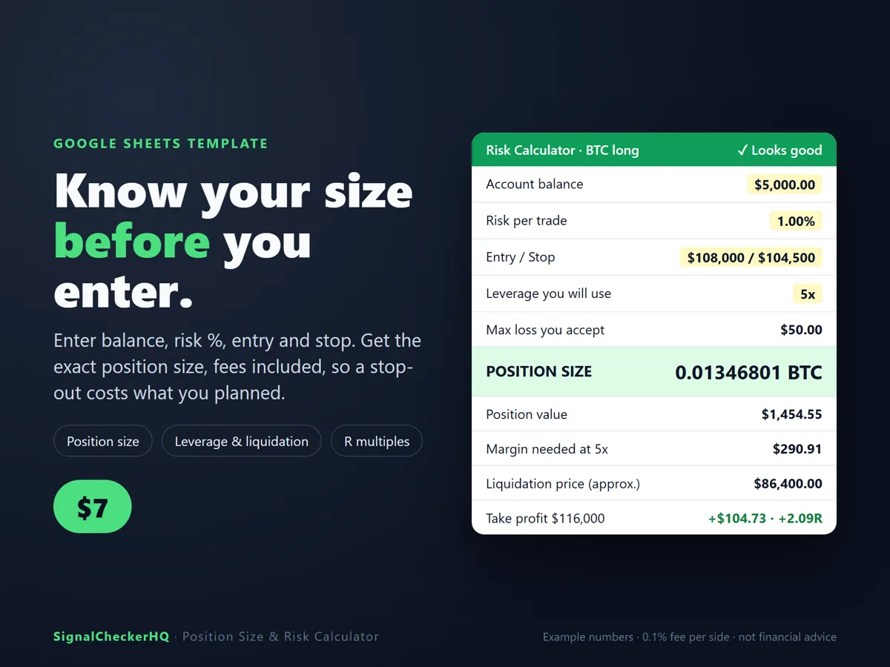
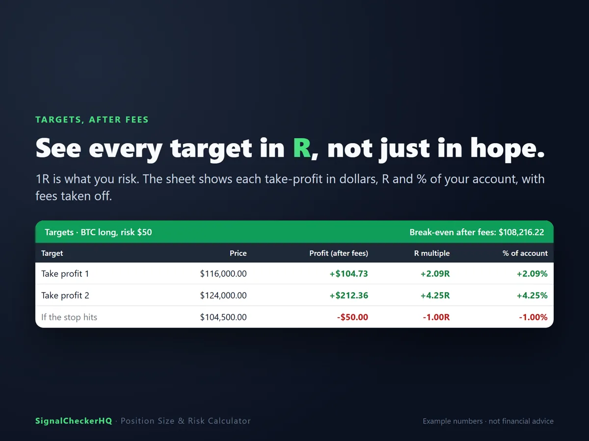
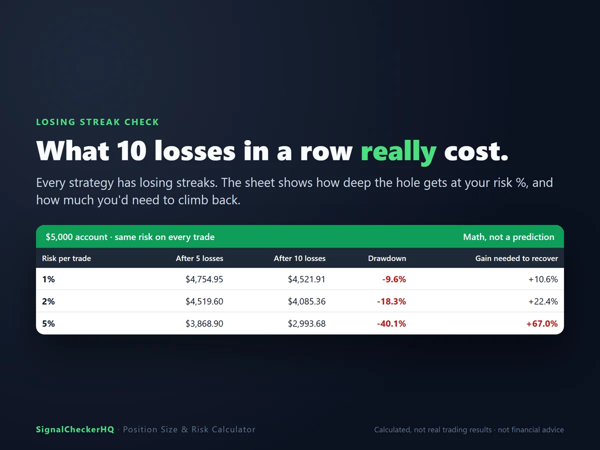
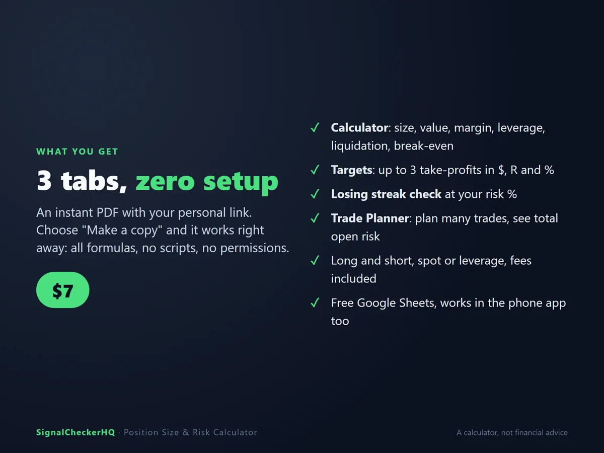

Знайте размер позиции до входа.
Введите баланс, риск в %, вход и стоп. Получите точный размер позиции с учётом комиссий — чтобы стоп стоил ровно столько, сколько вы запланировали.
Мгновенная загрузка · работает в бесплатных Google Таблицах · Position Size & Risk Calculator

Что считает
- Размер позиции в монетах и в $, чтобы стоп стоил ровно выбранный риск
- Нужная маржа и плечо и примерная цена ликвидации — с предупреждением, если ликвидация наступит раньше стопа
- До 3 тейк-профитов в $ после комиссий, в R и в % от депозита, плюс цена безубытка
- Серии убытков: что 1–20 убыточных сделок подряд сделают с депозитом
- Trade Planner: планируйте несколько сделок и видьте общий открытый риск
Возможности
- Лонг и шорт, спот или плечо, любая монета
- Только формулы: без скриптов, разрешений и API-ключа
- Работает в бесплатных Google Таблицах — на компьютере и в мобильном приложении
- Встроенные проверки ловят стоп или цель не с той стороны



Что вы получите
Мгновенная загрузка с вашей личной ссылкой для копирования таблицы (3 вкладки: Calculator, Trade Planner, How to use) и 2-минутной инструкцией (англ.).
Полезно знать
- Нужен бесплатный аккаунт Google.
- Цены ликвидации — это оценка. Всегда проверяйте на своей бирже.
- Нужен лишь один быстрый расчёт? Воспользуйтесь бесплатным онлайн-калькулятором.
- Сами таблицы и инструкции к ним на английском языке.
Вопросы
Чем отличается от бесплатного калькулятора?
В таблице есть 3 цели, таблица серий убытков и Trade Planner, и она хранится в вашем Google Диске.
Плечо меняет мой риск?
Нет. Если размер считается от стопа, плечо меняет только маржу и цену ликвидации — пока ликвидация не наступает раньше стопа.
Все 4 инструмента за $39
Complete Kit: Signal Checker, Trade Journal, Portfolio Tracker и Risk Calculator. $39 вместо $53.
Калькулятор считает по введённым вами числам. Это не финансовая рекомендация, и он не говорит, что и когда торговать. Лицензия: для личного использования одним человеком; не передавайте и не перепродавайте таблицу, ссылку на неё или ваш ключ.